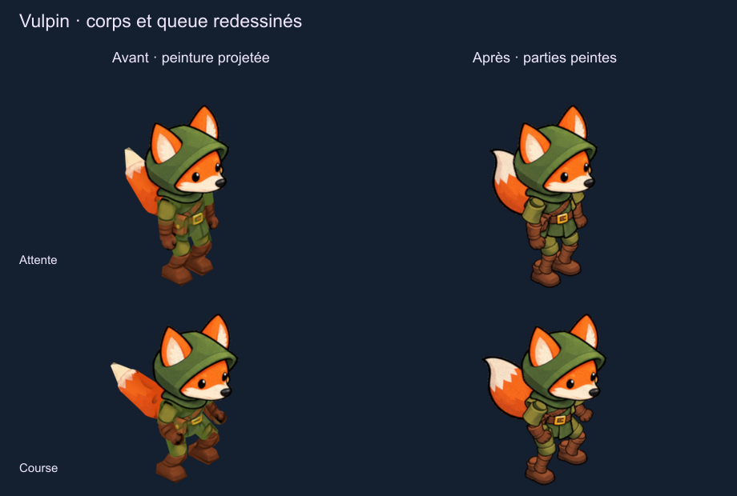
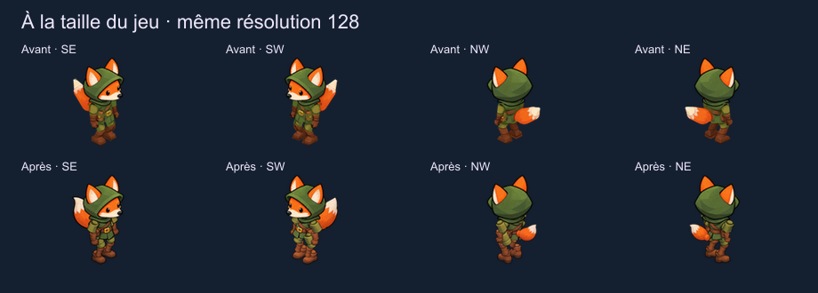
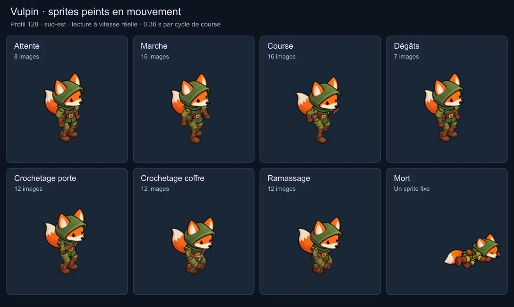
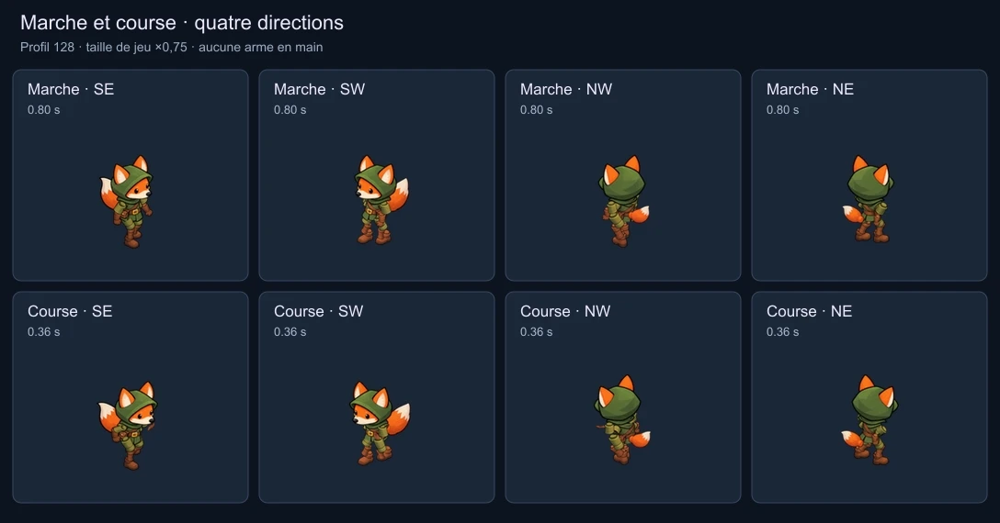
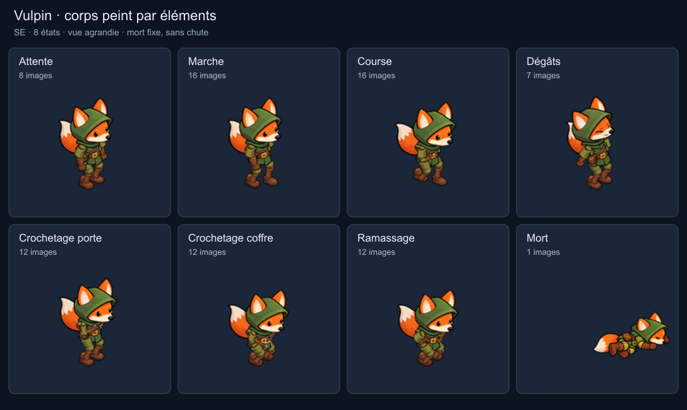
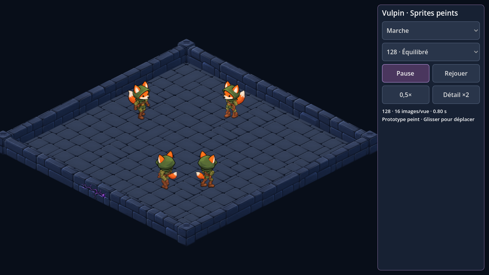

Vulpin · corps et textures corrigés
La tête conservait son dessin net, mais la projection sur les volumes du mannequin effaçait les contours du corps. La tunique, les bras, les jambes, les bottes et la queue sont maintenant peints séparément puis articulés sur le même squelette.

La résolution de sortie est identique. Les têtes, les expressions et les quatre images de mort sont conservées.
À la taille du jeu

Profil équilibré : 128, 320 sprites uniques sur 3 atlas, 3,16 Mo pour le paquet Godot contre 3,21 Mo avant. Les textures décodées occupent 10,89 Mio. La correction ne demande pas une texture plus grande.
Les gestes avec le nouveau corps


Marche et course : 16 images par cycle dans le profil équilibré. Course conservée à 0,36 s. Dégâts, crochetage de porte, crochetage de coffre et ramassage gardent leur cadence. Mort fixe, sans chute.
Chaque orientation

Capture Godot

1 762 contrôles des ressources et 588 contrôles de la visionneuse réussis. Les 96 comparaisons natives de transparence et d’ancrage n’ont aucun écart. Trois profils vérifiés et chargés depuis leur paquet indépendant.
Cette version reste une revue visuelle séparée du jeu. Les pièces peintes suivent les poses du mannequin, avec un ajustement uniforme ; leurs contours ne sont pas une reconstruction 3D exacte. La queue utilise une pièce entière liée à sa base. Les raccords d’articulation restent à juger en mouvement. Aucun nouvel APK et aucune modification des règles ou sauvegardes.